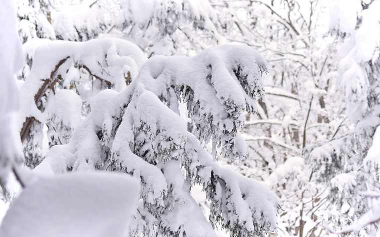
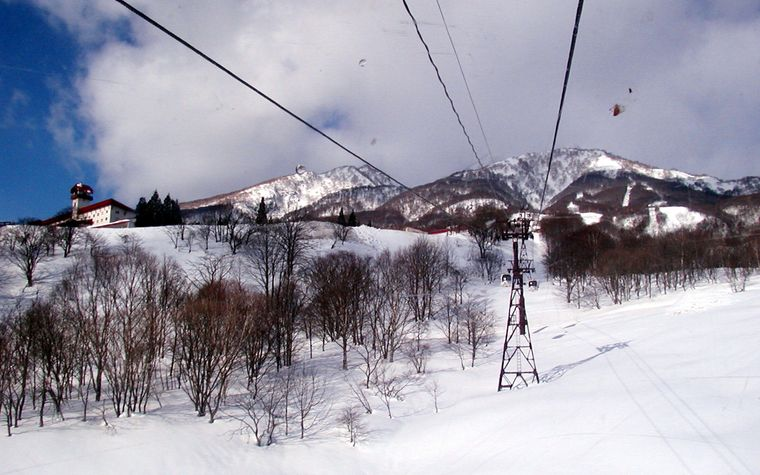

黑姬高原Kurohime Kogen
Day 1 · 18 Jan
平日單日¥5,500（約 HKD$272）
假日單日¥6,200（約 HKD$306）
租借全套¥5,600（約 HKD$277）
25/26 價。網上租借在出發前兩日 14:00 截止，唔可以當日補。纜車 8:30–16:30（平日到 16:00）。雪校只有日文。
Kurohime 官方料金表 · 核對 2026-08-24
06
只列我們五個雪場。結論先講：買單日票，唔買任何通行證；英文課程 10 月底前落實。
估算匯率 ¥1 = HKD$0.0494（Xe，2026-08-24）。付款前請重新核對。
Day 1 · 18 Jan
25/26 價。網上租借在出發前兩日 14:00 截止，唔可以當日補。纜車 8:30–16:30（平日到 16:00）。雪校只有日文。
Kurohime 官方料金表 · 核對 2026-08-24
Day 2 · 19 Jan
25/26 價。26/27 超早割 1 日券已上架：¥5,100（約 HKD$252）（票 ¥4,600（約 HKD$227） ＋ IC 押金 ¥500（約 HKD$25） 可退），9 月 1 日 00:00 開賣、只賣到 9 月 30 日，10 月起 ¥5,200（約 HKD$257）；不限日子、不需換票、不可退。26/27 平日單日票官方寫「価格は現在調整中」。季票 26/27 超早割（1 Jul–30 Sep 2026）¥42,000（約 HKD$2,075），早割（1 Oct–30 Nov）¥56,000（約 HKD$2,766），定價 ¥71,000（約 HKD$3,507）。
Alpen Blick 超早割 1 日券 · 核對 2026-08-24
Day 3 · 20 Jan
25/26 價，五個雪場中最貴但雪道最長（8,500m、垂直 1,124m）。26/27 季度 19 Dec 2026 – 28 Mar 2027（予定）。注意 E2 スーパージャイアント（950m、最大 38°）與 D3 初級線共用三田原纜車出口。
Prince Hotels 官方課程圖 · 核對 2026-08-24
Day 4 · 21 Jan
14 條纜車、17 條雪道、最長 3,000m、最斜 38°，初/中/高 50/30/20。くまどー區夜滑到 21:00。早割 2026 年 9 月 1 日開賣，只經楽天チケット／アソビュー／パスマーケット。
SnowJapan（第三方，官網停機） · 核對 2026-08-24
Day 4 加場（條件好才去）
只有一條初級線：ホテルビギナーコース 750m / 10°。チャンピオンC 800m / 10° 是平緩的中級，チャンピオンA 1,200m / 32° 未壓雪。如果 Day 4 決定兩場都去，就買聯合票。
AKR 官方雪道頁 · 核對 2026-08-24
妙高沒有「跨雪場單日票」。但有一張 Mt Myoko + 3 Day Pass（三日票，可分開使用）覆蓋我們四個妙高雪場，詳見 6.2 跨雪場票監察。單日票仍然要在該雪場自己買。
每日監察目標：有沒有一張票可以走遍 Mt Myoko 四個雪場——池之平 Ikenotaira / Alpen Blick、妙高杉之原 Myoko Suginohara（含三田原 Mitahara）、赤倉溫泉 Akakura Onsen、赤倉觀光 Akakura Kanko。黑姬高原 Kurohime 不屬 Mt Myoko 組合（長野縣飯綱側），永遠要在雪場單獨買票——這一點 Lawrence 已知，不影響計劃。
| 票種 | 覆蓋 | 25/26 參考價 | 26/27 今日狀態 | 對我們的判斷 |
|---|---|---|---|---|
| Mt Myoko + 3 Day Pass 3 日，可分開使用 | 妙高 4 雪場 全中 + Arai / Madarao / Tangram + Mt Myoko Shuttle 免費 | ¥30,000（約 HKD$1,482） | 等開賣 官方頁寫 25/26 由 12 月 27 日起賣；26/27 日期與價錢未公佈 | 最接近我們需要的一張，但以 25/26 價計仍貴過三張單日票（見下方計算） |
| Mt Myoko All Mountain Pass 全季票 | 妙高 4 雪場 全中（巴士須加買） | ¥115,000（約 HKD$5,681） + 巴士 ¥20,000（約 HKD$988） | 10 月 1 日起 官方季票頁寫明「Available from October 1st」 | 不需要 4–5 日行程回不了本 |
| 赤倉溫泉 × 赤倉觀光 共通券 | 只有這兩個雪場（雪道相連） | 1 日 ¥8,500（約 HKD$420） | 等公佈 赤倉溫泉官網因不正アクセス仍停機；早割 9 月 1 日開賣 | Day 4 很有用——只貴過赤倉溫泉單場票約 ¥1,500（約 HKD$74），卻可同時滑 Akakan |
| Ikon Pass 26/27 | 只有杉之原 + Lotte Arai | US$1,449（約 HKD$11,302） | 已開賣 | 不需要 遠貴過單日票 |
| NAGANO 7 Powder Dream Pass | 長野 7 個雪場 | ¥140,000（約 HKD$6,916） | 已公佈 | 不需要 妙高不在內 |
三日票多付的錢買到：Mt Myoko Shuttle 全季免費（兩人三日約 ¥6,600（約 HKD$326））、以及 Arai / Madarao / Tangram 的選擇。結論：如果 26/27 三日票維持 ¥30,000（約 HKD$1,482） 左右，單日票仍然較划算；除非我們改變主意想去 Arai 或 Madarao。
估算匯率 ¥1 = HKD$0.0494（Xe，2026-08-24）。付款前請重新核對。
來源：Myoko Tourism 季票頁、mountmyoko.axess.shop（核對 2026-08-24）。注意：官方頁今日仍列 25/26 日期，而 Lotte–Madarao 接駁巴士標註 SUSPENDED。
| 通行證 | 包含 | 價格 | 判斷 |
|---|---|---|---|
| Mt Myoko All Mountain Pass（季票） | 赤倉溫泉 · 赤倉觀光 · 池之平 · 杉之原 | ¥115,000（約 HKD$5,681） + 巴士 ¥20,000（約 HKD$988）（必須同買） | 不需要 五日行程用唔到 |
| Mt Myoko + 3-Day All Resort + Bus | 再加 Lotte Arai · Madarao · Tangram | ¥30,000（約 HKD$1,482） | 不需要 26/27 巴士覆蓋縮水 |
| Ikon Pass 26/27 | 只有杉之原 · Lotte Arai | US$1,449（約 HKD$11,302） Base US$1,019（約 HKD$7,948） | 不需要 遠貴過單日票 |
| Mountain Collective 26/27 | 日本只有 Niseko | — | 不需要 唔包妙高 |
| NAGANO 7 Powder Dream Pass | 長野 7 個雪場 | ¥140,000（約 HKD$6,916） | 不需要 妙高不在內 |
| 學校 | 雪場 | 26/27 狀態 | 半日（下午） | 半日（上午） | 全日 | 人數 |
|---|---|---|---|---|---|---|
| Escape Myoko | 池之平 Ikenotaira | 網站列 26/27 價 | ¥30,000（約 HKD$1,482） | ¥35,000（約 HKD$1,729） | ¥59,000（約 HKD$2,915） | 每位教練計價，最多 6 人（同程度） |
| Myoko Snowsports | 赤倉溫泉 Akakura Onsen | 已開放預約 12 Dec 26 – 28 Mar 27 | ¥30,000（約 HKD$1,482） 13:45–16:00 | ¥40,000（約 HKD$1,976） 2.5 小時 | ¥75,000（約 HKD$3,705） | 最多 4 位同價 |
| Yodel Snow School | 赤倉 Akakura | 已開放預約 | ¥30,000（約 HKD$1,482） 2.5 小時 | Early Bird 8:30–9:45 ¥20,000（約 HKD$988） | ¥68,000（約 HKD$3,359） | 1–4 人同價 |
| Go Myoko / Canyons | 赤倉 Akakura | 價目已更新 2026-08-24 | ¥32,000（約 HKD$1,581） 13:30–16:00 | ¥42,000（約 HKD$2,075） | ¥70,000（約 HKD$3,458） 09:00–15:00 | 最多 6 人 |
為何推薦：（一）該校官網自己就寫初學者應由池之平開始，教練熟這個雪場的平緩線；（二）雪場就在酒店同一區，唔需要清早搭巴士；（三）上午上課，當日下午可以立即自己重複練，記憶最新鮮。
何時改用備案：（一）Escape Myoko 上午時段被訂滿；（二）Day 2 天氣差，改把課程移到 Day 4；（三）如果決定兩節課都用同一間學校，Myoko Snowsports 的連續日折扣才有意義。
Day 1（黑姬高原）唔安排課程。Kurohime 雪校只有日文，語言唔通反而學壞習慣。第一日只做裝備適應與基本動作。
估算匯率 ¥1 = HKD$0.0494（Xe，2026-08-24）。付款前請重新核對。

